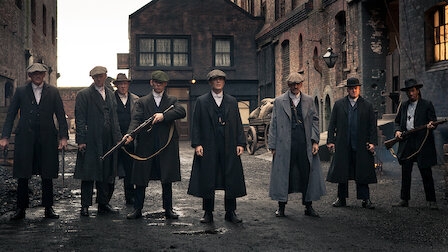

Sinopsis
Peaky Blinders es una serie de televisión inglesa de drama histórico, emitida por el canal BBC Two y por la plataforma Netflix. La serie está protagonizada por Cillian Murphy y se centra en una familia de gánsteres de Birmingham, durante los años veinte y del ascenso de su jefe, Thomas Shelby, un mafioso que dominará toda Inglaterra, después de afrontar una terrible guerra. Shelby, pese a ser un criminal y un mafioso, tiene rasgos antiheroicos, pues es un personaje ambivalente que, pese a su brutalidad, en muchas ocasiones es la única esperanza para terminar con otros villanos que pueden considerarse más viles y mezquinos que él, sigue a la familia criminal Shelby y su ascenso al poder en el mundo del crimen organizado.
Galería de fotos

Banda sonora
Creado por Steven Knight
Los creadores de la serie se basaron en los Peaky Blinders, una banda criminal que existió en la ciudad de Birmingham en las primeras décadas del siglo XX. Peaky Blinders ha logrado el reconocimiento unánime de la crítica especializada desde su estreno y ha sido elogiada por su cuidada ambientación, sus guiones y la actuación de su reparto. La serie ha logrado varios premios, entre ellos el de la Academia Británica de las Artes Cinematográficas y de la Televisión al Mejor Director y Mejor Fotografía; y el premio de la Academia Irlandesa de Cine y Televisión al Mejor Actor Principal.
Galería de fotos